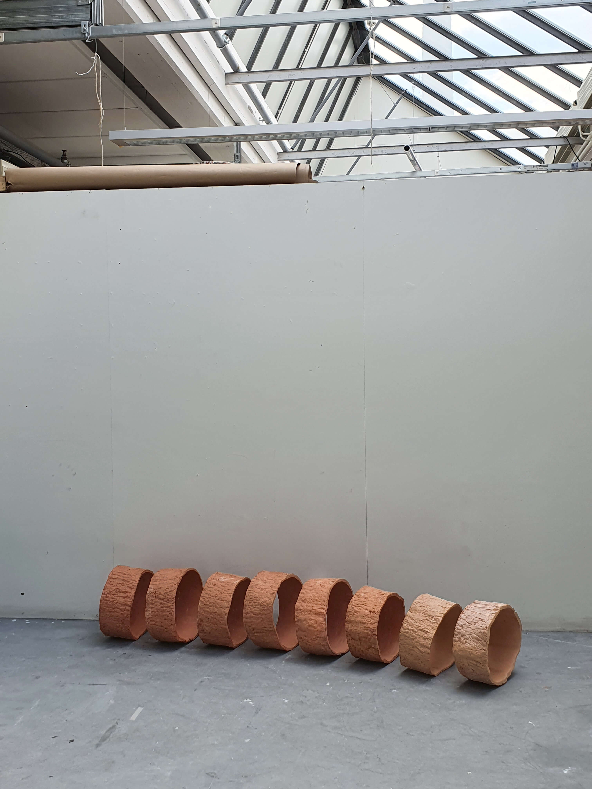
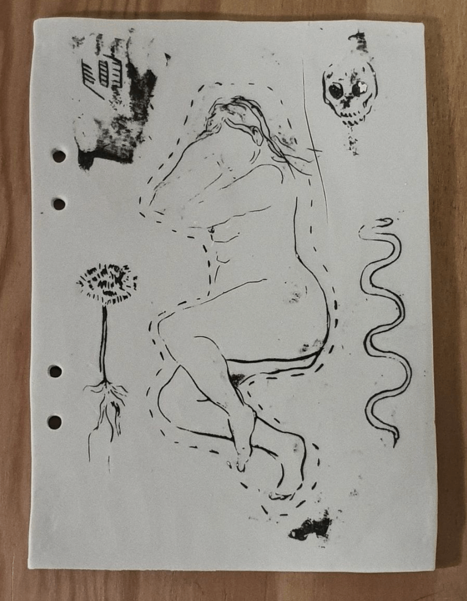
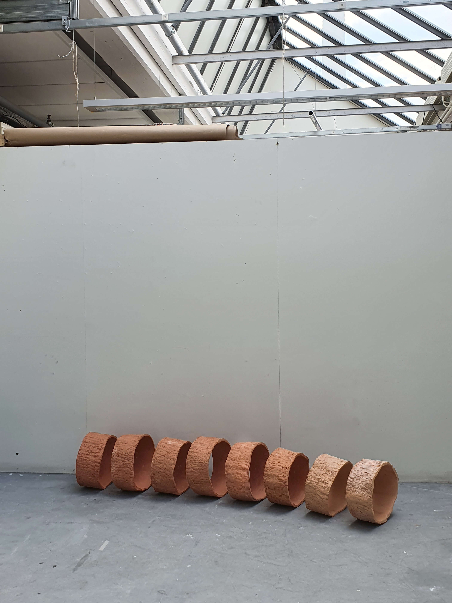
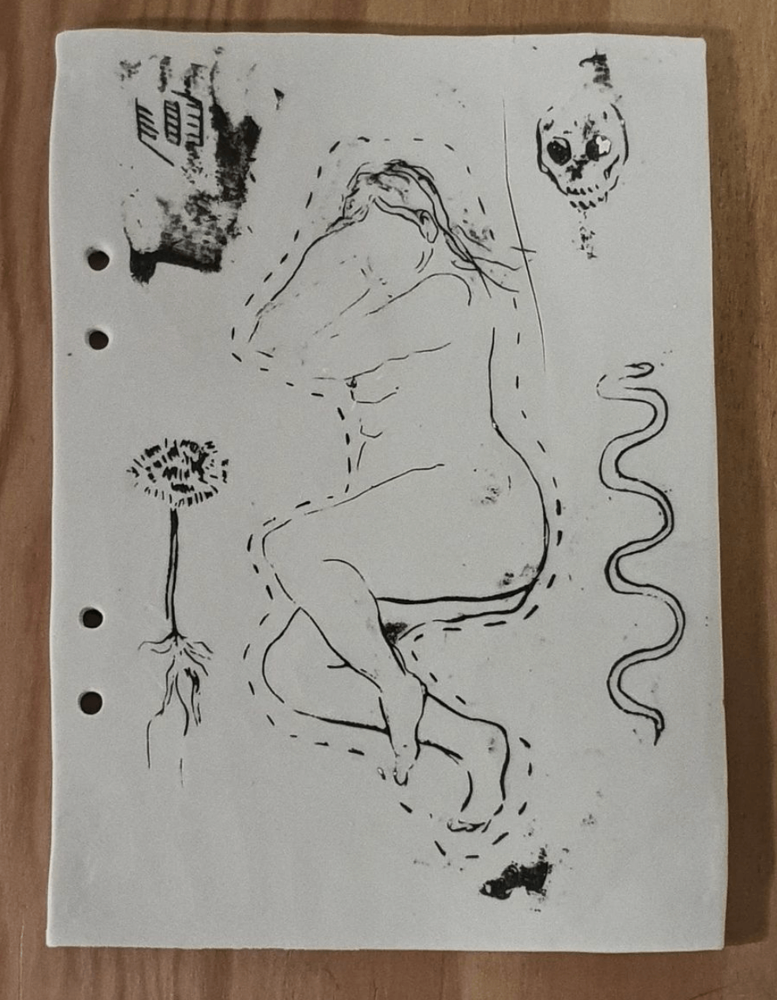

Isabel Tegström (b.1994) is a artist originally from Sundsvall now living in Stockholm. She graduated from Konstfack with a BA in Ceramics and Glass 2021. Tegström are a part of the studio collective Drömhästen, situated in Bergshamra, northern Stockholm.
Tegström is a materialbased artist, working mainly with ceramics and alabaster. Her work mostly examines the duality of humans relationship with nature. Through the material she examines themes such as nature, mortality, bodies and wood.
Something something about graphic design.


sofie.png)


 


